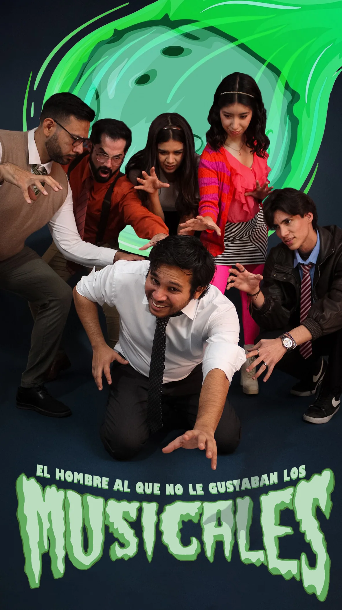

Una producción de Ecos de Apolo
Comedia · Terror · Musical
El hombre al que no le gustaban los musicales.
Cuando el mundo entero empieza a cantar, desafinar podría ser la menor de tus preocupaciones.
Conoce la historia
Una invasión fuera de tono.
Paul es un oficinista común y corriente que tiene una sola certeza en la vida: odia los musicales. Pero cuando una misteriosa fuerza sobrenatural invade el pueblo de Hatchetfield, sus habitantes comienzan a cantar, bailar y actuar como parte de un macabro espectáculo musical.
Junto a sus compañeros de trabajo y Emma, una barista que comparte su desprecio por las canciones espontáneas, Paul tendrá que luchar por sobrevivir a una invasión que convierte la vida cotidiana en un aterrador número musical. Porque, cuando el mundo entero empieza a cantar, desafinar podría ser la menor de tus preocupaciones.


La obra en vivo
Momentos en escena.
Instantes de la función, desde los números musicales hasta las escenas que dieron vida a la historia. Selecciona una fotografía para verla en grande.
Material promocional y de preparación
Pre-producción y promoción.
Conservamos las fotografías de la etapa previa y las imágenes que usamos para presentar y promocionar la producción.
Seguimos en contacto
Nos vemos entre bambalinas.
¿Quieres conocer más sobre nuestro trabajo? Escríbenos o síguenos para acompañar el camino de Ecos de Apolo.
Volver a las producciones